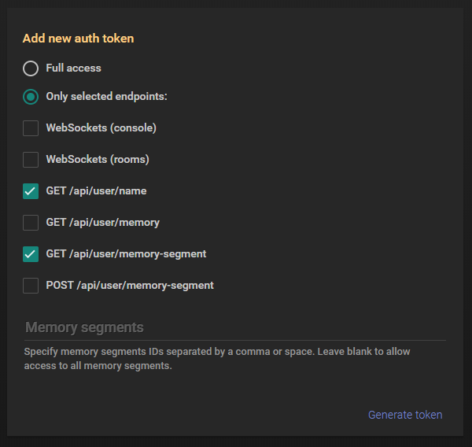
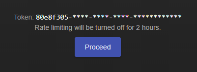

Screeps 并没有一个文档化的公共 Web API。但是，如果您想使用这些没有文档的 HTTP 接口在我们的服务器和客户端之间进行通信的话，没有关系。我们开发了一个 验证令牌（Authentication Tokens）系统可以让您的工作更加轻松。
常见的浏览器客户端一般使用 Google Invisible reCAPTCHA 来在后台验证某些请求，包括登录请求。而 Steam 客户端使用加密的本地 Steam 连接来完成类似的功能。如果您想要构建一些不需要人工干预的外部工具，则可以生成持久的身份验证令牌来发出请求，从而避免输入验证码。令牌一经生成即可永久使用。
使用验证令牌
您可以通过 账户设置 来生成一个验证令牌：

一个 完全权限 的令牌的访问范围和您用身份验证凭据登录的访问范围相同。您也可以限制该令牌的访问范围，包括指定的接口，websockets 事件和内存分段。
下面这两种令牌的使用方法都是有效的：
在您的请求 header 中携带
X-Token字段：X-Token: 3bdd1da7-3002-4aaa-be91-330562f54093在 URL 的请求参数中携带
_token字段：https://screeps.com/api/user/name?_token=3bdd1da7-3002-4aaa-be91-330562f54093
访问次数限制
浏览器或者客户端发送的常规请求是不会受到该限制的影响。
但是，所有通过验证令牌认证的请求都会受到访问次数的限制。当超出规定的访问次数后，请求将会返回 429 HTTP 状态码。
HTTP/1.1 429 Too Many Requests
Rate limit exceeded, retry after 51243msHTTP 请求中包含下述三个 header 字段来提供频率限制的信息，您可以使用它们来规划请求次数：
| Header 字段名 | 介绍 |
|---|---|
X-RateLimit-Limit |
每个限制窗口允许的最大请求数。 |
X-RateLimit-Remaining |
当前窗口中剩余的请求数。 |
X-RateLimit-Reset |
当前窗口的请求次数重置时间，以 UTC 时间秒为单位 |
X-RateLimit-Limit: 60
X-RateLimit-Remaining: 35
X-RateLimit-Reset: 1514539728请求限制分为下面两个等级：全局限制和接口限制：
| 接口 | 频率 |
|---|---|
| 全局 | 120 / 分钟 |
| GET /api/game/room-terrain | 360 / 小时 |
| POST /api/game/map-stats | 60 / 小时 |
| GET /api/user/code | 60 / 小时 |
| POST /api/user/code | 240 / 天 |
| POST /api/user/set-active-branch | 240 / 天 |
| GET /api/user/memory | 1440 / 天 |
| POST /api/user/memory | 240 / 天 |
| GET /api/user/memory-segment | 360 / 小时 |
| POST /api/user/memory-segment | 60 / 小时 |
| POST /api/user/console | 360 / 小时 |
| GET /api/game/market/orders-index | 60 / 小时 |
| GET /api/game/market/orders | 60 / 小时 |
| GET /api/game/market/my-orders | 60 / 小时 |
| GET /api/game/market/stats | 60 / 小时 |
| GET /api/game/user/money-history | 60 / 小时 |
解除限速
如果您开发的第三方工具需要进行人工干预，那么您可以通过集成一个特殊流程来暂时关闭特定令牌的请求频率限制。为此，您必须为用户提供一个链接 https://screeps.com/a/#!/account/auth-tokens/noratelimit?token=XXX，并且引导用户导航到该链接。在用户点击该页面中的 ”Proceed“ 按钮后，该令牌将被授予两个小时的无限速率访问时间。

如果您的工具是基于 web 开发的，那么您可以将该页面通过 <iframe> 嵌入进来并且监听 screepsTokenSuccess 事件信息：
window.addEventListener('message', (event) => {
if(event.data === 'screepsTokenSuccess') {
console.log("We are not rate limited now!");
}
}, false);请注意，该页面使用 Google Invisible reCAPTCHA 进行验证，所以无法通过其他手段自动完成。
您可以使用接口 https://screeps.com/api/auth/query-token?token=XXX 来查询指定令牌的信息（包含其不受限访问时长）。